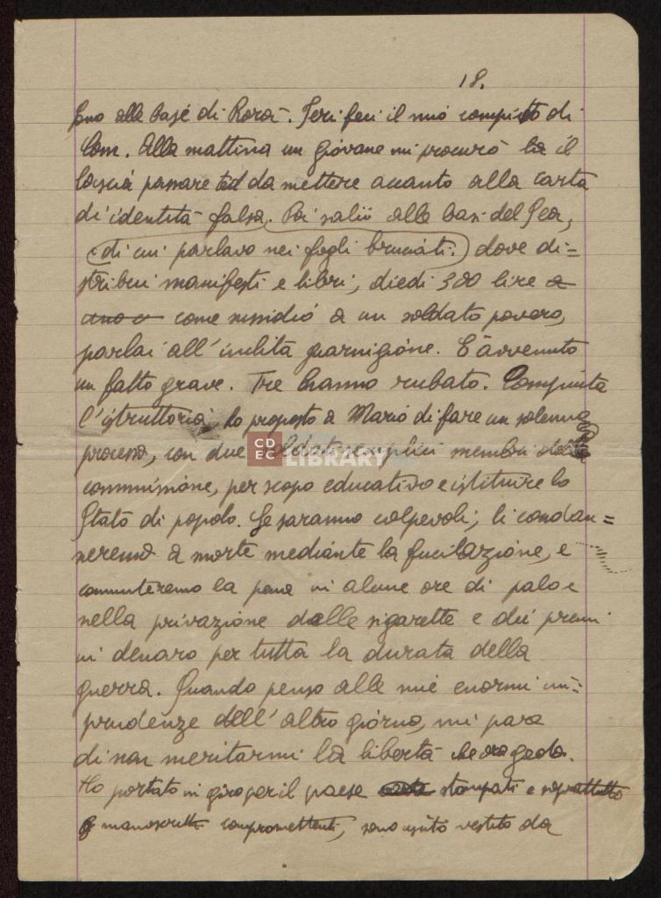
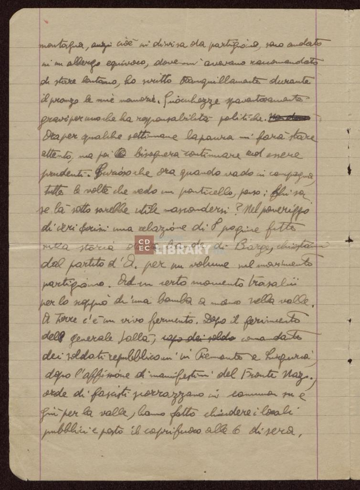
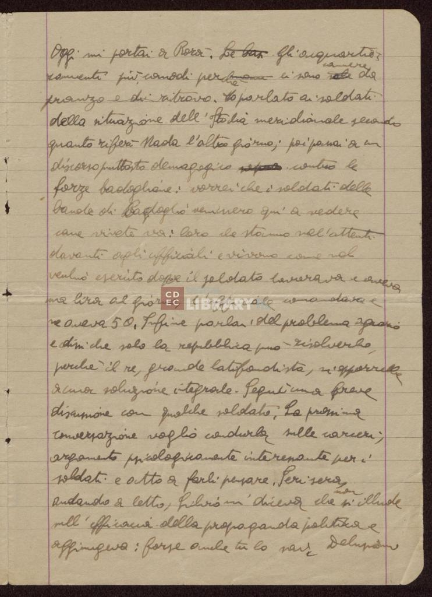

Informazioni sul manoscritto
| Titolo | Diario di Emanuele Artom novembre 1943 - 23 febbraio 1944 |
| Autore | Emanuele Artom |
| Lingua | Italiano |
| Collezione | Fondo Emanuele Artom |
| Manoscritto | b. 1, fasc. 9 |
| Luogo di conservazione | Centro di Documentazione Ebraica Contemporanea |
| Storia |
La scrittura del diario è avvenuta tra il novembre 1943 e il 23 febbraio 1944. |
| Acquisizione |
I diari di Emanuele Artom sono state donati alla Fondazione CDEC su espressa volontà della madre Amalia Segre |
Descrizione fisica
| Supporto | Fogli di carta |
| Quantità | Il manoscritto è costituito da 173 pagine scritte a mano da Emanuele Artom . |
| Condizioni | Le pagine sono in buone condizioni e ben leggibili anche con la presenza di sporadiche imperfezioni causate da sbiaditure e correzioni |
| Mani | Le prime due pagine del manoscritto sono scritte a mano da Amalia Segre. Tutta la rimanente parte del diario è stata scritta da Emanuele Artom |
| Stesura | La stesura è stata effettuata principalmente con una matita, ad eccezione di alcune pagine scritte con l'inchiostro |



Legenda
Trascrizione
Pagina 165
fino alla base di [--NON CHIARO--] . Ieri feci il mio compito di
[--NON CHIARO--] . Alla mattina un giovane mi procurò
lasciapassare ted da mettere accanto alla carta
di identità falsa. Poi salii alle basi del Sea,
di cui parlavo nei fogli bruciati dove dis=
tribuì manifesti e libri, diedi 300 lire
parlai all’ [--NON CHIARO--] guarnigione. E' avvenuto
un fatto grave. tre hanno rubato. Compiuta
l'istruttoria ho proposto a Mario di fare un solenne
processo, con due soldati semplici membri [--NON CHIARO--]
commissione, per scopo educativo e istituire lo
Stato di popolo. Se saranno colpevoli, li condan=
neremo a morte mediante la fucilazione, e
commuteremo la pena in alcune ore di palo e
nella privazione delle sigarette e dei premi
in denaro per tutta la durata della
guerra. Quando penso alle mie enormi in=
prudenze dell'altro giorno, mi pare
di non meritarmi la libertà che ora godo.
Ho portato in giro per il paese [PARTE MANCANTE] stampati e sopratutto
[PARTE MANCANTE] manoscritti compromettenti, sono uscito vestito da
Pagina 166
montagna,
in un albergo equivoco, dove mi avevano raccomandato
di stare lontano, ho scritto tranquillamente durante
il pranzo le mie memorie. Sciochezze spaventosamente
gravi per uno che ha rappresentabilità politiche [PARTE MANCANTE] .
Ora per qualche settimana la paura mi farà stare
attento, ma poi [PARTE MANCANTE] bisognerà continuare ad essere
prudenti. Furioso che ora quando vado in campagna,
tutte le volte che vedo un ponticello, penso: chissà
se la sotto sarebbe utile nascondersi? Nel pomeriggio
di ieri scrissi una relazione di 8 pagine fitte
sulla storia delle bande di Barga,
dal partito d'A. per un volume sul movimento
partigiano. Ad un certo momento trasalii
per lo scoppio di una bomba a mano nella valle.
A terra c'è un vivo fermento. Dopo il ferimento
del generale [--NON CHIARO--] ,
dei soldati repubblicani in Piemonte e Liguria,
dopo l'affissione di manifesti del FronteNaz.,
orde di fascisti scorrazzano in [--NON CHIARO--]
giù per la valle, hanno fatto chiudere i locali
pubblici e posto il coprifuoco alle 6 di sera,
Pagina 167
Oggi mi portai a [--NON CHIARO--] . [PARTE MANCANTE] Gli acquartie
[--NON CHIARO--] più comodi perché ci sono
pranzo e di ritrovo. Ho parlato ai soldati
della situazione dell'Italia meridionale secondo
quanto riferì [--NON CHIARO--] l'altro giorno; poi pensai a un
discorso piuttosto demagogico [PARTE MANCANTE] contro le
forze Badogliane: vorrei che i soldati delle
bande di Badoglio venissero qui a vedere
come vivete voi: loro che stanno sull'attenti
davanti agli ufficiali e vivono come nel
vecchio esercito dove il soldato lavorava e aveva
una lira al giorno, l'ufficiale comandava e
ne aveva 50. Infine parlai del problema agrario
e dissi che solo la repubblica può risolverlo,
perché il re, grande latifondista, si opporrebbe
a una soluzione integrale. Seguì una breve
discussione con qualche soldato. La prossima
conversazione voglio condurla sulle carceri,
argomento psicologicamente interessante per i
soldati e atto a farli pensare. Ieri sera
andando a letto, Silvio mi diceva che non si illude
sull'efficacia della propaganda politica e
aggiungeva: forse anche tu sai. Delusioni
Bibliografia
- Guri Schwarz , Diari di un partigiano ebreo, Torino, Bollati Boringhieri, 2008
- Alberto Cavaglion , La moralità armata. Studi su Emanuele Artom, Milano, Franco Angeli, 1993
- Paola De Benedetti , Eloisa Ravenna , La moralità armata. Studi su Emanuele Artom, Milano, CDEC - Centro di Documentazione Ebraica Contemporanea, 1966
- Benvenuta Treves , Tre vite dall'ultimo '800 alla metà del '900. Studi e memorie di Emilio, Emanuele, Ennio Artom, Firenze, Israel, 1954
- Liliana Picciotto Fargion , Eloisa e il CDEC, Milano, Israel, Gennaio - Giugno 1981